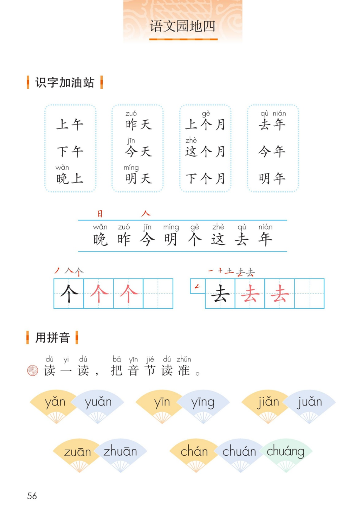
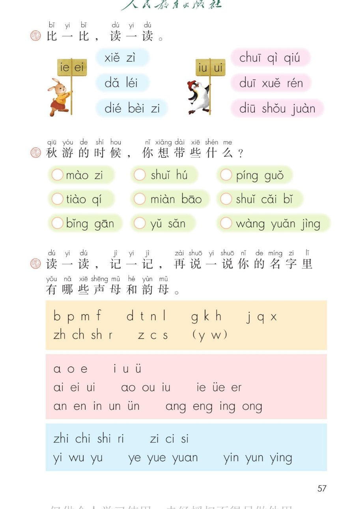
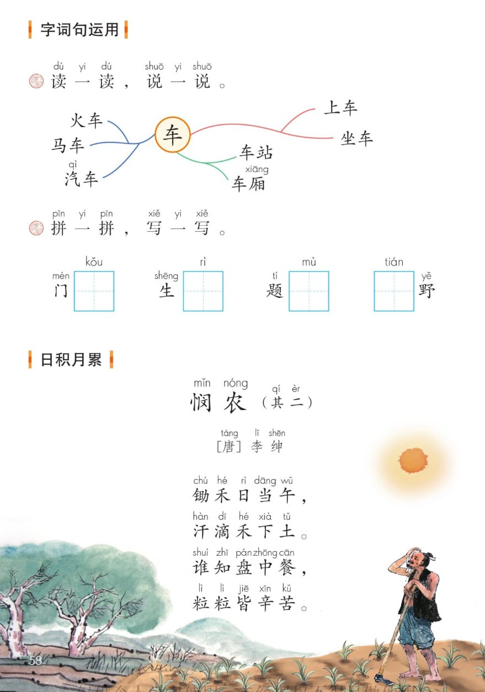
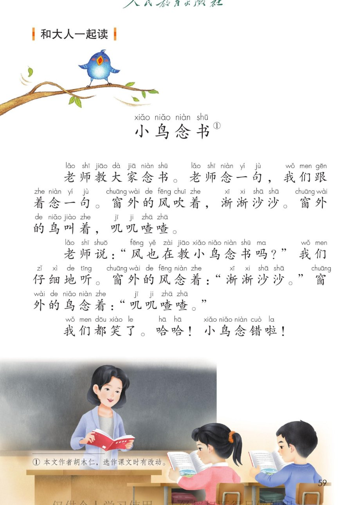

×
🔊 手机听不到声音怎么办？
① 先把手机
媒体音量调大 ，确认没开静音、没连蓝牙耳机；在微信里打开的，点右上角「⋯ → 用浏览器打开」。
② 还是没声音？到应用商店免费下载
Microsoft Edge 浏览器 （它自带朗读发声），用它打开本页面就能出声。
③ 换了 Edge 仍然没声音，说明这部手机的
硬件/系统不支持 网页朗读（多为老旧机型）；近几年买的新手机一般都能正常播放。
→ 打开声音自检
统编版 · 一年级上册 · 第四单元 · 语文园地四
语文园地四
识字加油站 · 用拼音 · 字词句运用 · 日积月累 · 和大人一起读
会认 8 字 会写 2 字 拼音总表 闯关 8 题
这个园地学什么： 认识表示时间的 9 个词语、8 个字，写好「个、去」；把 5 组音节读准，
分清 ie—ei、iu—ui；秋游的东西选一选；拼一拼、写一写「口、日、目、田」；给「车」开花组词；
背背《悯农（其二）》；再和大人一起读有趣的故事《小鸟念书》。
课本第 56 页 点词语听读音，一组一组认
都是时间的词： 一天里分上午、下午、晚上 ；昨天、今天、明天是一天天过；
上个月、这个月、下个月是一月月过；去年、今年、明年是一年年过。⏰
识字条 · 连起来读
晚 昨 今 明 个 这 去 年 —— 晚里藏着「日 」，今的头顶藏着「人 」
课本第 56 页田字格 先看笔顺，再动笔
课本第 56 页 点扇形音节听读，一组一组比
都是容易混的音节： 前鼻、后鼻分清楚，平舌、翘舌听仔细。👂
课本第 57 页 韵母长得像，词语读得准
课本第 57 页 点一选，再点一下取消，边选边读
选一选，说一说： 点一下是「我想带」，再点一下取消。选完和大人说说为什么带它 。🎒
课本第 57 页 点字母听读，点按钮整行连读
总表小卡
读一读，记一记 ，再说说你的名字 里有哪些声母和韵母。比如「明」：声母 m，韵母 ing。✏️
课本第 58 页 一个「车」字开出一树词语
读一读，说一说
「车」字开花啦！左边是车的名字 ，右边是上车坐车 ，下面是车站车厢 。🚗
我还会说： 自行车、公交车、救护车、消防车……你还能说出一个带「车」的词语吗？🚌
课本第 58 页田字格 拼出词语，把缺的字写进田字格
课本第 58 页 点一行读一行，再连起来背
🎵 全诗连读
🐢 放慢背一背
诗意小卡
农民中午顶着大太阳锄地，汗珠一滴一滴落进土里。碗里的每一粒饭，都是辛辛苦苦 种出来的——吃饭要不剩饭，爱惜粮食。🌾
💡 《悯农（其二）》的作者是唐代诗人李绅 。「悯」就是心疼、怜惜的意思，心疼种田人的辛苦。
课本第 59 页 点一段读一段，再和大人连起来读
🎵 全文连读
拟声词真好玩： 风念书是淅淅沙沙 ，鸟叫是叽叽喳喳 。和大人分角色读一读，看谁学得像！🐦
点题目可以听题，点选项就判对错，答完自动算分
已经答 0 题，答对 0 题。
点图放大

第 56 页 · 识字加油站 · 用拼音

第 57 页 · 比一比 · 秋游 · 拼音总表

第 58 页 · 字词句运用 · 日积月累

第 59 页 · 小鸟念书